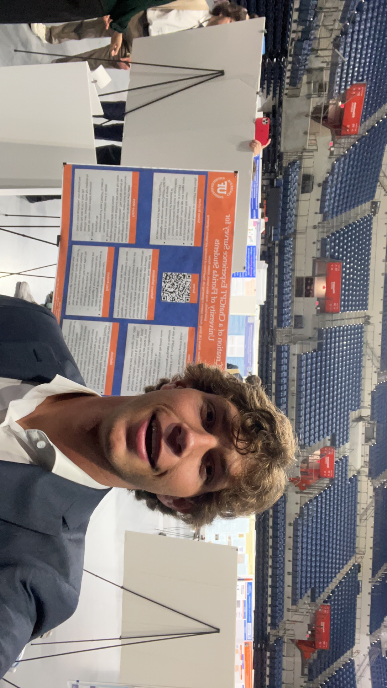
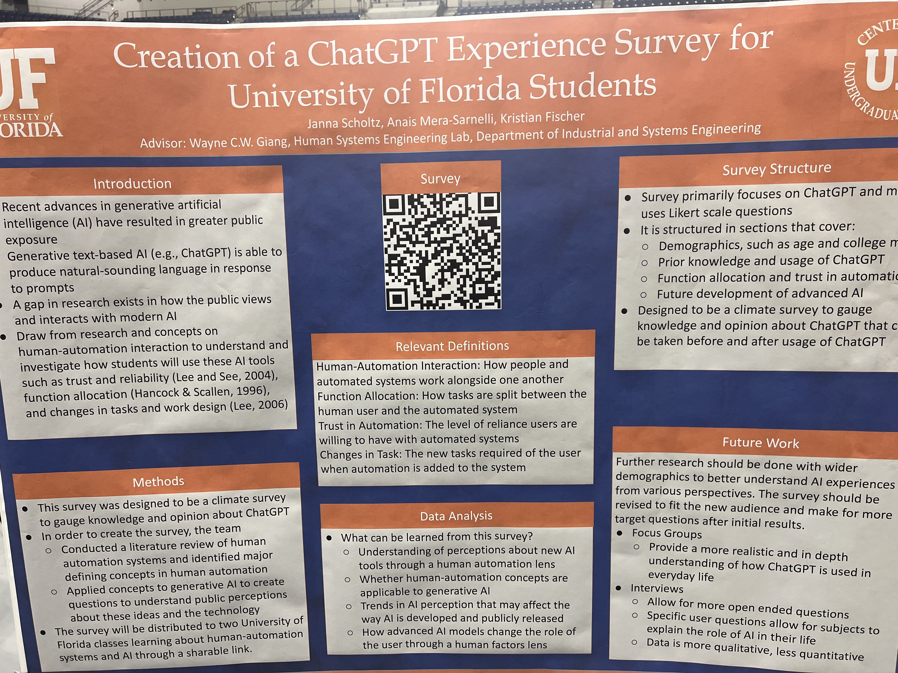

ChatGPT Survey
Climate Survey
Related Links: Survey CUR Symposium ISE Symposium
This climate survey measures the change in trust of artificial intelligence following the release of ChatGPT.
Over the course of several months, I participated in undergraduate research at the University of Florida, mentored by a professor. I was tasked with developing a survey which would measure trust in artifical intelligence, creating a preliminary data set to be used for future research. This survey was presented to multiple UF technology courses, earning over 100 responses. After analyzing the data, processing conclusions, and detailing future strategies, the survey was presented at the Undergraduate Research Symposium, as well as the Industrial Systems Symposium.
Features
- Qualtrics Survey building
Media
Undergraduate Research Symposium
ISE Research Symposium
